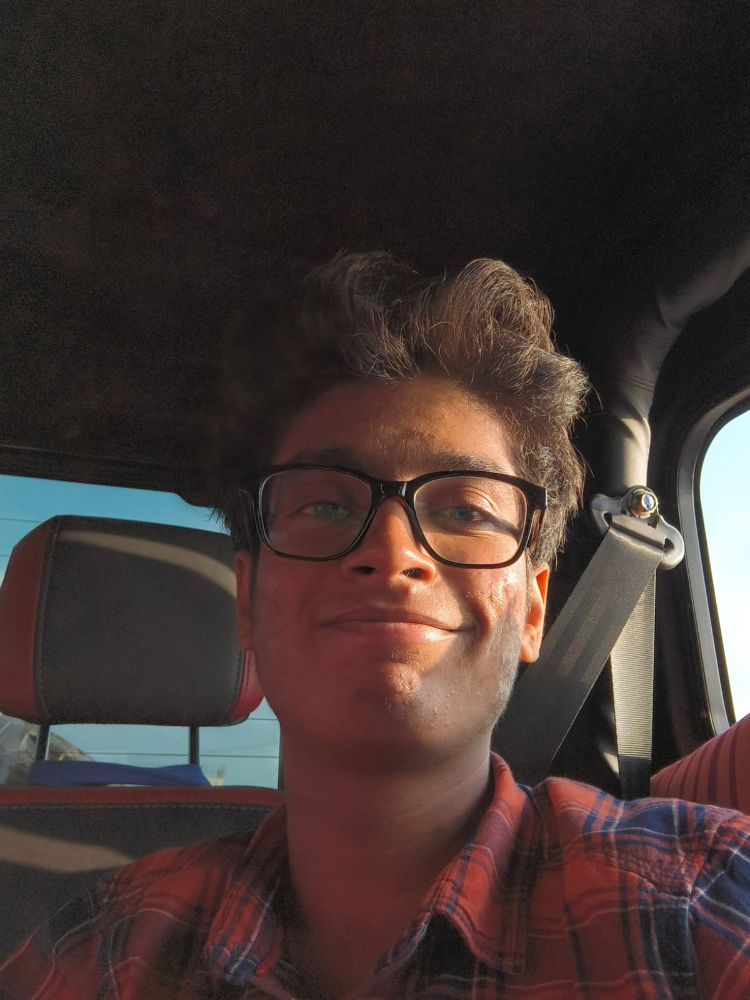

2025 — 2029CURRENT
UNDERGRADUATE DEGREE
B.Tech — Computer Science & Engineering
MIT-ADT University
SEMESTER 1 SGPA8.81
SEMESTER 2 SGPA9.10
CURRENT CGPA8.95
COMPUTER SCIENCE ENGINEERING STUDENT
Hello, I'm Aryan Kale. I'm a B.Tech Computer Science & Engineering student at MIT-ADT University who enjoys exploring technology, developing project ideas, and turning concepts into useful prototypes.

Add your photo here
assets/profile.jpg01 — ABOUT ME
I enjoy the space where technology, creativity, and problem-solving meet.
I'm pursuing a B.Tech in Computer Science & Engineering at MIT-ADT University. I like exploring how software can solve practical problems, experimenting with AI-powered creative tools, and developing ideas into prototypes. My college projects have helped me explore student safety, learning experiences, and disaster preparedness.
I'm still strengthening my fundamentals, so I try to be honest about what I know and keep learning through practice. I work best when I can contribute ideas, collaborate with a team, and learn from strong guidance.
Outside technical work, I have experience hosting school events and public speaking. I also enjoy gaming, movies, and creating AI-generated images and videos.
02 — EDUCATION
UNDERGRADUATE DEGREE
MIT-ADT University
CLASS X
CLASS XII
School names can be added when provided.
FIRST ATTEMPT
JEE Main percentile achieved in my first attempt.
A milestone in my engineering journey
03 — SELECTED PROJECTS
College projects and prototypes exploring real problems. Each reflects a stage of learning, ideation, and development.
A flash-flood prevention and response concept for hilly regions. The proposed system combines hill sensors for unusual activity, weather and terrain data, historical flood information, drone-assisted image capture, monitoring stations, village-level risk mapping, safe-time estimation, dynamic evacuation routes, real-time risk updates, and a citizen-and-authority platform.
A smart band concept focused on attendance tracking and student safety. The project received second prize at IdeaSpark and has an ongoing prototype.
A YouTube learning extension concept that lets students mark a confusing lecture timestamp and ask for an explanation without switching tabs. Planned features include timestamp-based doubt explanations, summaries, quizzes, flashcards, learning history, snapshots, and audio-recorded doubts. A working prototype was developed; the project was later discontinued after the second semester.
A college project exploring a cabin designed to reduce surrounding noise and create a quieter, more focused environment.
Project visuals are CSS illustrations. Descriptions distinguish concepts and prototypes from production-ready systems.
04 — SKILLS & LEARNING
I have beginner-level familiarity with several programming and web technologies and am continuing to improve through coursework and practice. I prefer to describe my level honestly rather than overstate it.
Strong fundamentals first. Practice, projects, and consistency.
LEARNING EVENTS
Attended learning events and explored HTML, CSS, C, Python, and Java at a beginner level.
05 — ACHIEVEMENTS & ACTIVITIES
Recognition for the Nexora smart student band project concept.
PROJECT ACHIEVEMENTRanked 27th in a Mathematics Olympiad conducted at college. Certificate of participation received.
ACADEMIC ACTIVITYExperience in public speaking and hosting events during school.
COMMUNICATIONAttended learning events to explore web technologies and programming languages at beginner level.
CONTINUOUS LEARNING06 — CONTACT
I'm interested in learning, building, and collaborating on thoughtful technology projects. Feel free to reach out about projects, internships, or ideas worth exploring.
Replace the generic LinkedIn link with your profile URL before sharing.